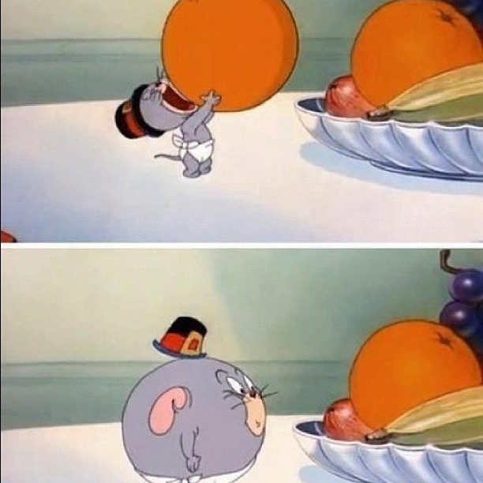

REST purist's manifesto
- Rely on HTTP - verbs etc.
- No server side state in session
- Use links(URIs) to map resources together
- No server side state in session
- Use your own hyper media format
- NO F###ING SERVER SIDE STATE IN SESSION!! OMFG!

The client–server communication is further constrained by no client context being stored on the server between requests. Each request from any client contains all of the information necessary to service the request, and any session state is held in the client.
Login/session-related problems
- Session timeout
- Log out
- 3rd party authentication - (BankID, Buypass etc.)
- CSRF-tokens
Confidentiality
SSL test
Authentication
- HTTP Basic Authentication
- HTTP Digest Authentication
- HTTPS Client certificates
- NTLM/SPNEGO
- Session based - standard form based login
- Token-based - OpenID, SAML, OAuth2 etc.
Authorization - Vertical Access control
Authorization - Horizontal access control
Authorization
- Vertical access control - role based
- Horizontal access control - access to a given representation/document
Integrity
- HTTPS
- Signing requests using secret keys or PKI (certificates++)
Signing requests
- Canonicalize what is to be signed
- Sign it
- Encode the signature in Base64 and embed in request as a header
Verifying the signature
- Canonicalize what was expected to be signed
- Verify signature
- Use the canonicalized data
WS-security
XML signature wrapping attack
SAML signature wrapping attack
REST Signature Example - Amazon
Authorization: AWS AWSAccessKeyId:Signature
Authorization = "AWS" + " " + AWSAccessKeyId + ":" + Signature; Signature = Base64( HMAC-SHA1( UTF-8-Encoding-Of( YourSecretAccessKeyID, StringToSign ) ) ); StringToSign = HTTP-Verb + "\n" + Content-MD5 + "\n" + Content-Type + "\n" + Date + "\n" + CanonicalizedAmzHeaders + CanonicalizedResource; CanonicalizedResource = [ "/" + Bucket ] + <HTTP-Request-URI, from the protocol name up to the query string> + [ sub-resource, if present. For example "?acl", "?location", "?logging", or "?torrent"]; CanonicalizedAmzHeaders = [lower cased, sorted, trimmed, joined with newline]
Avoiding replay attacks
- HTTPS
- Signed timestamp
- Signed Unique ID - (GUID, UUID)
400 Yeah, I've heard that before...
XXE - XML eXternal Entity Attacks
XXE in real-life
XEE - XML Entity Expansions
<?xml version="1.0" encoding="utf-8"?> <!DOCTYPE foo [ <!ENTITY a "1234567890" > <!ENTITY b "&a;&a;&a;&a;&a;&a;&a;&a;" > <!ENTITY c "&b;&b;&b;&b;&b;&b;&b;&b;" > <!ENTITY d "&c;&c;&c;&c;&c;&c;&c;&c;" > <!ENTITY e "&d;&d;&d;&d;&d;&d;&d;&d;" > <!ENTITY f "&e;&e;&e;&e;&e;&e;&e;&e;" > <!ENTITY g "&f;&f;&f;&f;&f;&f;&f;&f;" > <!ENTITY h "&g;&g;&g;&g;&g;&g;&g;&g;" > <!ENTITY i "&h;&h;&h;&h;&h;&h;&h;&h;" > <!ENTITY j "&i;&i;&i;&i;&i;&i;&i;&i;" > <!ENTITY k "&j;&j;&j;&j;&j;&j;&j;&j;" > <!ENTITY l "&k;&k;&k;&k;&k;&k;&k;&k;" > <!ENTITY m "&l;&l;&l;&l;&l;&l;&l;&l;" > ]> <foo>&m;</foo>
Length: 687,194,767,360 bytes ~ 687 GB
XXE - XML eXternal Entity Attacks
Memory exhaustion - a pile of foo
<?xml version="1.0" encoding="utf-8"?>
<foo>
<foo>
<foo>
<foo>
<foo>
<foo>
...1 million foos later...
<foo>
Hola el mundo
</foo>
...there and back again...
</foo>
</foo>
</foo>
Secure XML parsing
- Disable doctype declarations
- Don't use DOM-based parsers (prefer SAX)
- Valdate against schemas
- Check out ws-attacks.org
Security in a REST based front end
- Transfer data as JSON (no HTML and no HTML entities)
- Set a character set (UTF-8) in HTML and in JSON responses
- Use a good templating framework - escape by default
- Default to secure functions
$(...).text(val)
instead of$(...).html(val)
Content types
- Check the content type header - don't assume!
- Respond with a content type AND a character set
- Response header:
X-Content-Type-Options: nosniff
CSRF-protection
- Generate a cryptographically secure token and put it in the session
- Transfer it to the client as a part of user data
- Include in responses as an HTTP header
$("body").bind("ajaxSend", function(elm, xhr, s){
if (s.type == "POST") {
xhr.setRequestHeader('X-CSRF-Token', csrf_token);
}
});
Caching
- HTTP allows a client or proxy to cache resources
- by mistake
Clickjacking
- Steal data using hidden drag and drop
- Response header:
X-Frame-Options: DENY
Promiscuous services
- Is your service showing too much?
- Does it allow others to touch its privates?

Promiscuous services
Promiscuous services
Gluttonous services - Overconsumption
- You use a document database
- You don't strip unwanted fields
- Attacker sends 100,000 fields
- Presto!

Signed URIs
https://example.com/some/resource?id=2&signature=ab9829dfh02920920220baa422b6cc7
Real-life examples?
- Thai Duong and Juliano Rizzo disovered a flaw in Flickr's API Signature
- Flickr's API:
- Sort your URL parameters:
bar=2&baz=3&foo=1
- Concatenate the shared secret and parameter name-value pairs:
SECRETbar2baz3foo1
- Calculate the md5() and add as parameter
bar=2&baz=3&foo=1&signature=afb12318a0b9823bcd
- Sort your URL parameters:
MD5 "signature"
How MD-based algoritms work
Length extension attack
Attack on the Flickr API
- No difference between
?bar=2&baz=3&foo=1
and?b=ar2baz3foo1
- This allowed an attacker to build a new signed URI with arguments:
?b=ar2baz3foo10000020&bar=6&baz=5&foo=4
and then length extend the signature to include the new parameters
Attacking URL signatures by length extension
Attacking URL signatures by length extension
- We change from id=0 to id=1
- So the signature is no longer a match...
Attacking URL signatures by length extension
a26831c490f52416c2bfeb502ed9753f
secret.length + "id0".length = 6 + 3 = 9
"id1"
Implementing security
- Reusable filters
- CSRF
- Login
- Signature verification
- Caching headers
@ResourceFilters({ AuthenticatedUserAdminFilter.class,
CsrfVerificationFilter.class, NoCacheResponseFilter.class })
@Path(AccountResource.ACCOUNTS_BASE_PATH)
public class BaseResource {
Testing your REST security
- A REST API is stable - a website is not
- Integration tests - booting and actually running HTTP requests
- Can automate testing of:
- CSRF protection
- Signature tampering
- Log out
- XXE attacks
- Data tampering
<Thank You!>
More?
- Join OWASP Norway to learn/discuss web and application security
-
Hypermediadrevet API i praksis
Frode Nerbråten og Espen H. Halvorsen
Sal 3, 14:20 - 15:20, Torsdag